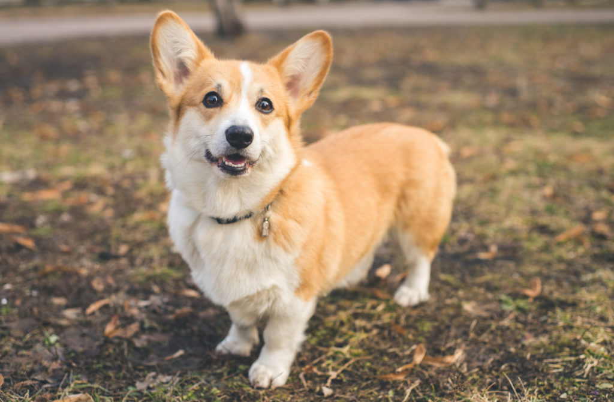
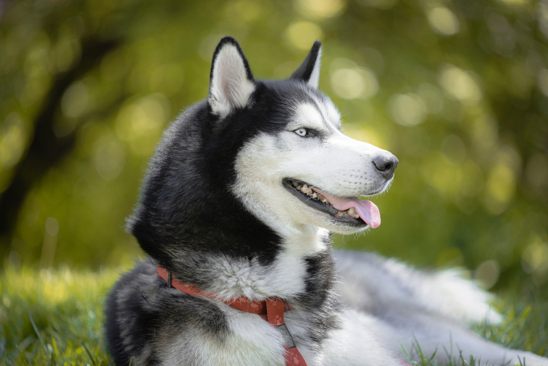
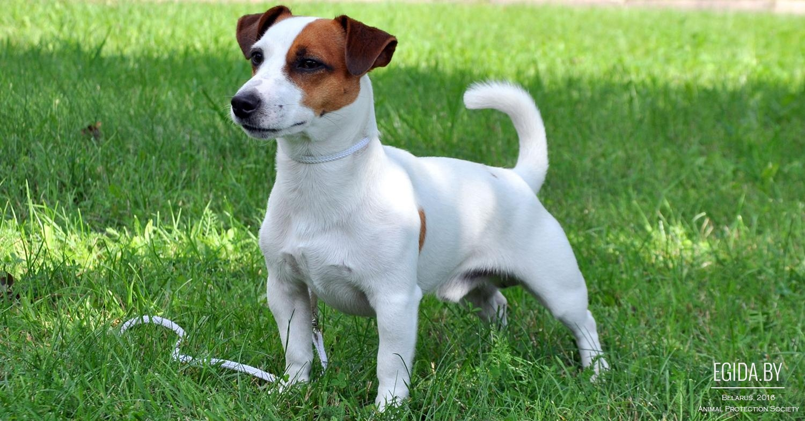
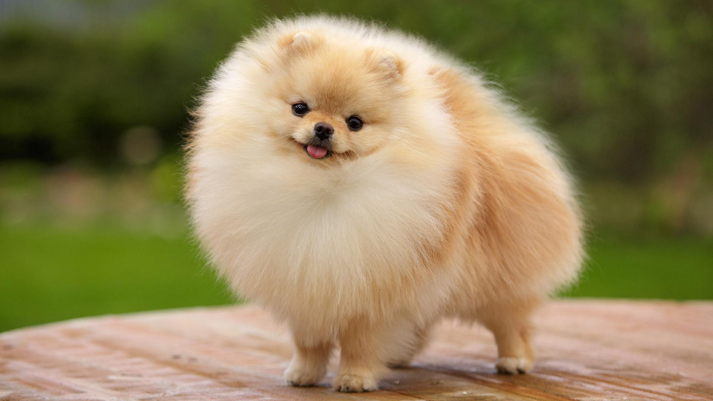
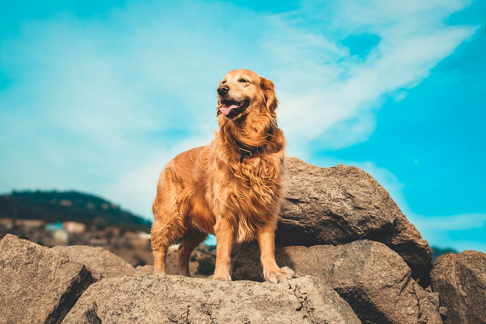

Часть 2: породы с 6 по 10

Коротконогий пастух с «улыбкой» королевы Елизаветы II. Она держала корги всю жизнь.

Голубые глаза, серый «маскарад» на морде и упрямый, но обаятельный характер.

Энергичный маленький «вечный двигатель». Нужны долгие прогулки и игры.

Пушистый комочек с лисьей мордочкой. Активный и очень привязчивый.

Солнечный характер, золотая шубка. Один из лучших поводырей и семейных псов.
Корм, лакомства, лежанки и игрушки для собак любой породы ищите в интернет-зоомагазине «Четыре лапы»